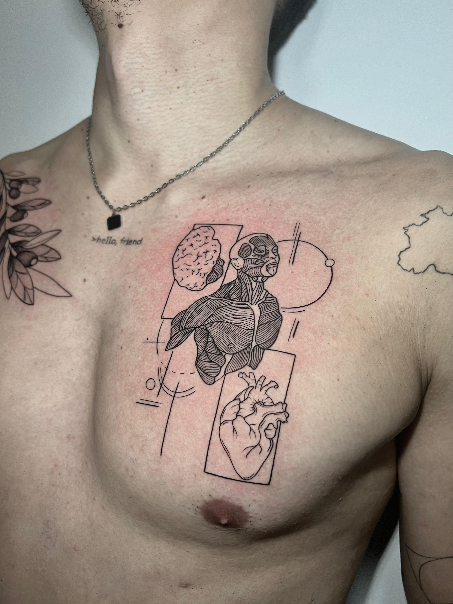
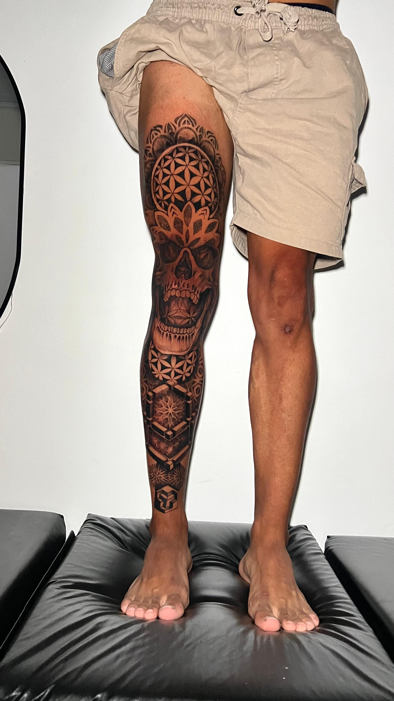
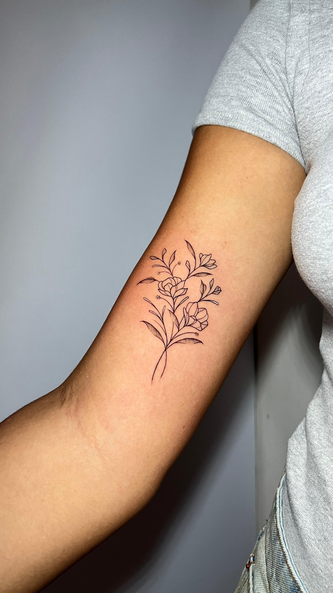
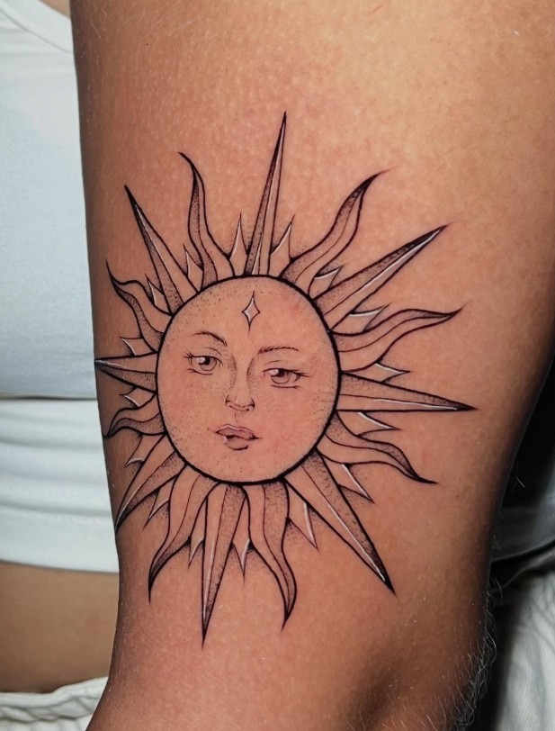

✳ Aura Studio Tattoo • Por: Hill Abreu
Tatuadora especializada em fine line, ornamental, fauna e flora. Traços leves, essência marcante.
📞 Agendamento ou dúvidas no WhatsApp 📸 Ver Portfólio no Instagram 📍 Onde estamos localizados
Atendemos exclusivamente com hora marcada. Por esse motivo, o endereço completo é informado após a confirmação do agendamento. O estúdio fica nas proximidades do West Shopping, em Campo Grande – RJ.



